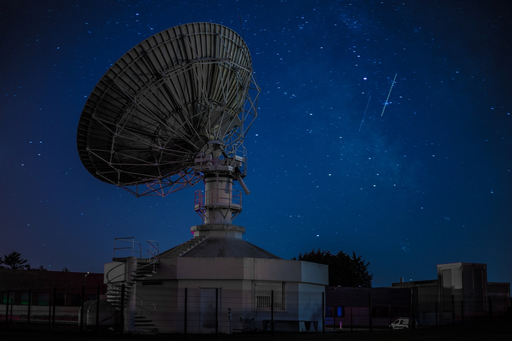

Liputan6.com, Beijing - China mengungguli teknologi nirkabel ultra dengan cepat, diam-diam negara ini meluncurkan satelit uji 6G pertama di dunia ke antariksa sementara AS masih berkutat dalam mengembangkan 5G.
Thyagarajan Nandagopal dari National Science Foundation menjelaskan bahwa satelit uji 6G itu disebut Star Era-12, dengan dilengkapi pita frekuensi yang sangat tinggi sehingga harus diuji di luar angkasa agar sinyalnya tidak akan hilang semudah di udara.
Seberapa cepat pita tersebut hinga kini belum diketahui, tetapi Nandagopal memperkirakan kisaran 100 dan 500 Gigahertz atau 100 kali lebih cepat dari 5G. Untuk memahami kecepatan itu, coba bandingkan ponsel 5G dan 4G, tentu 5G akan 100 kali lebih cepat daripada 4G, walaupun juga tergantung operatornya.

Dikutip dari New York Post, Selasa (17/11/2020), teknologi 6G yang dikembangkan China ini akan mencakup segala hal mulai dari komunikasi, telemedicine hingga keamanan nasional, menurut Profesor Tommaso Melodia, yang mengepalai Institut Northeastern University untuk Internet Nirkabel.
Seiring dengan perkembangan teknologi, akan datang banyak produk dan layanan baru yang akan mengalirkan miliaran dolar ke dalam ekonomi global, seperti 5G yang dibawa Uber, Instacart dan Netflix.
Misalnya, mungkin akan ada iPhone 6G yang dapat mengunduh film definisi tinggi dalam 8 detik dan 1.500 foto resolusi tinggi dalam waktu kurang dari satu menit. Hal lain yang mungkin dicakup oleh 6G adalah penggunaan teknologi robotik untuk keperluan medis di rumah sakit atau di tempat lainnya.
Nandagopal juga menepis dorongan China, menunjukkan NSF 6G dalam beberapa tahun. Di sisi lain, Melodia juga merasa AS tidak terlambat dalam perlombaan teknologi, menurutnya orang Amerika lebih mementingkan penelitian komunikasi terlebih dahulu.
"Kami bersemangat dengan hal-hal lain seperti kecerdasan buatan dan kemajuan perangkat lunak seperti Cloud. Namun, karena pandemi yang mempengaruhi ekonomi maka kami bergantung pada penelitian komunikasi, sehingga kami tidak bisa menerima begitu saja," ujar Melodia.
Bagi pakar urusan global NYU, Pano Yannakogeorgos, China mungkin belum menjadi pemenang dari perlombaan 6G, tetapi jelas bahwa negara komunis itu ingin menjadi pembawa standar 6G, seperti halnya untuk 5G.
Pemerintah China menetapkan jangka waktu lima tahun untuk tujuan strategis 5G dan para peneliti membuat tenggat waktu mereka. Menurut Yannakogeorgos, saat ini China adalah raja 5G, sama seperti Inggris yang merupakan pembangkit tenaga listrik telegraf komersial pertama di dunia pada abad ke-19.
"Dia yang mengontrol jaringan mengontrol dunia," tambahnya.
Jika China tetap memimpin 6G, Yannakogeorgos khawatir AS dan Eropa akan membawa dunia mundur dengan membentuk standar mereka sendiri. Misalnya di masa 3G, perangkat Amerika tidak akan berfungsi di luar negeri karena standar yang berbeda dan sebaliknya.
“Ini seperti membawa laptop Anda ke Eropa dan harus membeli adaptor,” tambahnya.